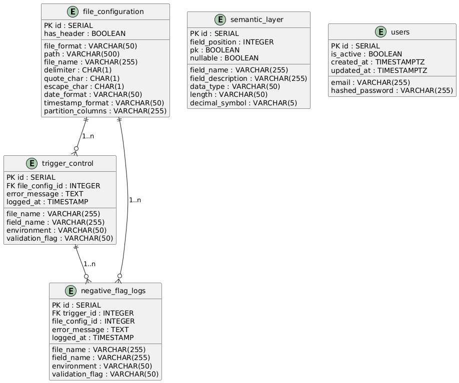

03 diseno
3. Diseño (Diagramas)¶
En la carpeta
docs/Img/se incluyen todos los diagramas en PNG o PlantUML; aquí se describen y referencian los más relevantes.
3.1 Casos de uso¶
A continuación se resumen los casos de uso principales para todo el sistema:
-
Registrar Usuario
- Actor: Usuario no autenticado.
-
Flujo:
- Accede a
/register(frontend). - Completa email y contraseña, envía
POST /auth/register(backend). - Si éxito (201), frontend redirige a
/login; si error, muestra mensaje en formulario.
- Accede a
-
Iniciar Sesión
- Actor: Usuario no autenticado.
-
Flujo:
- Accede a
/login. - Completa credenciales, envía
POST /auth/login. - Si éxito (200), backend devuelve JWT; frontend guarda en
localStoragey redirige a/dashboard. - Si 401, muestra mensaje “Credenciales inválidas”.
- Accede a
-
Cerrar Sesión
- Actor: Usuario autenticado.
-
Flujo:
- En navbar, pulsa Logout.
- Frontend elimina token y redirige a
/login.
-
Subir Fichero CSV
- Actor: Usuario autenticado.
-
Flujo:
- En
/dashboard, selecciona CSV y pulsa Subir Fichero. - Frontend muestra “Subiendo…”, envía
POST /files/uploadconmultipart/form-data. - Backend guarda el fichero en
uploaded_files/y crea/actualiza registro enfile_configuration. - Backend responde
{ "file_config_id": X }; frontend muestra alerta “Fichero subido ID: X” y refresca lista.
- En
-
Listar Configuraciones
- Actor: Usuario autenticado.
-
Flujo:
- Al acceder a
/dashboard, frontend haceGET /files/. - Backend devuelve array de configuraciones; frontend muestra tabla con cada fila: ID, file_name, path, has_header, delimiter, etc.
- Al acceder a
-
Editar Configuración (Modal)
- Actor: Usuario autenticado.
-
Flujo:
- En
/dashboard, pulsa Detalles en una fila. - Abre modal con campos prellenados (
delimiter,quote_char,escape_char,has_header,date_format,timestamp_format,partition_columns). - Usuario modifica valores y pulsa Guardar; frontend muestra “Guardando…”, envía
PATCH /files/{id}. - Backend actualiza
file_configurationy responde con objeto actualizado; frontend alerta “Configuración actualizada”, cierra modal y refresca lista.
- En
-
Eliminar Configuración
- Actor: Usuario autenticado.
-
Flujo:
- En
/dashboardo modal, pulsa Eliminar. - Mostrar
window.confirm("¿Estás seguro?"). - Si confirma, frontend muestra “Eliminando…”, envía
DELETE /files/{id}. - Backend elimina registro; responde 204; frontend alerta “Configuración eliminada” y refresca lista.
- En
-
Descargar Fichero
- Actor: Usuario autenticado.
-
Flujo:
- En modal, pulsa Descargar.
- Frontend hace
fetch(downloadURL, { headers: { Authorization: Bearer <token> } }). - Recibe Blob, crea
<a>conURL.createObjectURL(blob)ydownload=file_name, ejecutaa.click(). - Usuario obtiene el fichero en su equipo.
-
Enviar Fichero a HDFS (Backend → HDFS)
- Actor: Usuario autenticado.
-
Flujo:
- En
/dashboard, pulsa Validar en una fila; frontend muestra “Enviando…”, envíaPOST /files/push/{file_name}. -
Backend:
- Verifica que
uploaded_files/{file_name}exista; si no, responde 404. - Llama a WebHDFS NameNode para crear directorio
/data/bank_accountsy ajustar permisos (op=MKDIRS,op=SETPERM). - Inicia creación de fichero (
op=CREATE), recibe redirección 307 con URL de DataNode; ajusta host/puerto y sube contenido. - Devuelve
{ "message": "Pushed <file_name>" }. 3. Frontend alerta “Enviado a validar” y refresca lista.
- Verifica que
- En
-
Proceso de validación en Spark (motor)
- Actor: Sistema (motor de validaciones).
-
Flujo:
- Motor arranca en contenedor Docker; sale de safe mode (
hdfs dfsadmin -safemode leave), crea carpeta en HDFS y copia CSV. Main.scalaejecuta bucle de polling sobre/data/bank_accounts.-
Al detectar fichero, llama a
ExecutionManager.executeFile(path, outputTable).Reader.readFile(...)carga CSV como DataFrame.FileSentinel.verifyFiles(...)→ si falla,logTrigger(flag)entrigger_control(flags 32,33,34).TypeValidator.verifyTyping(...)→ si falla,logTrigger(...)(flags 35-38).ReferentialIntegrityValidator.verifyIntegrity(...)→ si falla,logTrigger(39).FunctionalValidator.verifyFunctional(...)→ si falla,logTrigger(flags 40–49).- Si todo OK,
logTrigger(2). 4. Borra el fichero de HDFS.
- Motor arranca en contenedor Docker; sale de safe mode (
-
Consultar Logs de Validación
- Actor: Usuario autenticado.
-
Flujo:
- Accede a
/logs; frontend ejecutaGET /files/logs?environment=&from_date=&to_date=. - Backend filtra registros en
trigger_controlsegún parámetros y devuelve array de logs. - Frontend formatea
logged_atcontoLocaleDateString('es-ES')y muestra tabla con columnas: ID, file_config_id, file_name, field_name, environment, validation_flag, error_message, fecha.
- Accede a
(Diagrams separados en docs/Img/Engine, docs/Img/Backend y docs/Img/Frontend respectivamente)
3.2 Diagrama entidad-relación¶
Tabla principal: trigger_control
id (serial PK)logged_at (timestamp)file_config_id (int FK → file_configuration.id)file_name (varchar)field_name (varchar, null)environment (varchar)validation_flag (varchar)error_message (varchar, null)
Otras tablas relacionadas:
-
file_configurationid (serial PK)file_format (varchar)path (varchar)file_name (varchar)has_header (boolean)delimiter (varchar)quote_char (varchar)escape_char (varchar)date_format (varchar)timestamp_format (varchar)partition_columns (varchar, null)created_by (int FK → users.id)created_at (timestamp)
-
semantic_layerid (serial PK)file_config_id (int FK → file_configuration.id)field_name (varchar)data_type (varchar)length (int)nullable (boolean)is_pk (boolean)format (varchar)
-
users(backend/front-end)id (serial PK)email (varchar, unique)hashed_password (varchar)is_active (boolean, default true)created_at (timestamp)updated_at (timestamp)
-
negative_flag_logs(opcional)id (serial PK)trigger_id (int FK → trigger_control.id)- (otros campos de detalle)
Relaciones:
users1—*file_configuration(un usuario puede tener varias configuraciones).file_configuration1—*semantic_layer(cada configuración define metadatos para múltiples campos).file_configuration1—*trigger_control(cada configuración genera múltiples logs de validación).semantic_layer(opcional) 1—*trigger_control(para identificar qué campo entrigger_control.field_nameproviene de qué metadato).trigger_control1—*negative_flag_logs(detalle de validaciones negativas).

(Ver docs/Img/ERD.png para la imagen completa.)
3.3 Diagrama de clases del modelo¶
Se incluyen las clases más relevantes en los tres componentes.
3.3.1 Motor de validaciones (Scala)¶
-
config
DbConfig.scalaDBConnection.scalaSparkSessionProvider.scala
-
models
FileConfigurationCaseClass.scalaSemanticLayerCaseClass.scala
-
services
ExecutionManager.scalaTriggerIdManager.scala
-
utils
Reader.scalaWriter.scalaFileManager.scala
-
validators
FileSentinel.scalaTypeValidator.scalaReferentialIntegrityValidator.scalaFunctionalValidator.scala
-
Main.scala: configura el bucle de polling e invoca a
ExecutionManager.
Ejemplo de case class:
package models
case class FileConfigurationCaseClass(
id: Int,
file_format: String,
path: String,
file_name: String,
has_header: Boolean,
delimiter: String,
quote_char: String,
escape_char: String,
date_format: String,
timestamp_format: String,
partition_columns: Option[String]
)
(Ver docs/Img/Engine/ para la imagen completa.)
3.3.2 Frontend (React)¶
-
AuthContext.jsx
- Propiedades:
user,token - Métodos:
login(),register(),logout() -
FileConfig (modelo JS)
-
Propiedades:
id,fileName,path,hasHeader,delimiter,quoteChar,escapeChar,dateFormat,timestampFormat,partitionColumns - Métodos:
fetchAll(),create(),update(),delete(),pushToHDFS(),download() -
ValidationLog (modelo JS)
-
Propiedades:
id,fileConfigId,fileName,fieldName,environment,validationFlag,errorMessage,loggedAt - Métodos:
fetchAll() -
Componentes principales
-
AppRouter(gestiona rutas conRequireAuth) MainLayout(Navbar +<Outlet />)Dashboard(muestra lista de configuraciones y acciones)FileDetailModal(modal para editar/validar/eliminar/descargar)LogsPage(muestra logs formateandologged_at)
- Propiedades:
(Ver docs/Img/Frontend/ para la imagen completa.)
3.3.3 Backend (FastAPI)¶
-
models ORM (SQLAlchemy Async)
-
Userid: Integer PKemail: String(255) UNIQUE NOT NULLhashed_password: String(255) NOT NULLis_active: Boolean NOT NULL DEFAULT Truecreated_at: DateTime(timezone=True) DEFAULT now()-
updated_at: DateTime(timezone=True)FileConfiguration
-
id: Integer PK file_format: String NOT NULLpath: String NOT NULLfile_name: String NOT NULLhas_header: Boolean NOT NULLdelimiter: String(1) NOT NULLquote_char: String(1) NOT NULLescape_char: String(1) NOT NULLdate_format: String NOT NULLtimestamp_format: String NOT NULL-
partition_columns: String NULLTriggerControl
-
id: Integer PK file_config_id: Integer FK → FileConfiguration.idfile_name: String NOT NULLfield_name: String NOT NULLenvironment: String NOT NULLvalidation_flag: String NOT NULLerror_message: Text NULL-
logged_at: DateTime(timezone=True) DEFAULT now()NegativeFlagLog
-
id: Integer PK trigger_id: Integer FK → TriggerControl.id- (otros campos específicos)
-
-
Clases de servicio
-
file_service.py-
save_and_register_file(file: UploadFile, db: AsyncSession) → inthdfs_sync.py
-
push_file_to_hdfs(file_name: str)
-
-
-
Controladores (routers)
auth.py:/auth/register,/auth/loginfiles.py:/files/upload,/files/push/{file_name},/files/download/{file_name},/files/,/files/{id},/files/{id}(GET, PATCH, DELETE),/files/logshealth.py:/health(healthcheck)
(Ver docs/Img/Backend/ para la imagen completa.)
3.4 Diagramas de secuencia¶
Se incluyen los diagramas de secuencia más relevantes para cada componente. A continuación se describen de forma textual; ver docs/ para los PNG o PlantUML.
3.4.1 Secuencia: Subida de fichero (Frontend → Backend)¶
- Usuario → Dashboard (Frontend): selecciona CSV y pulsa Subir Fichero.
- Dashboard → Axios (
POST /files/upload): envíamultipart/form-dataal backend. -
Backend (
files.py) →file_service.save_and_register_file():- Guarda CSV en
uploaded_files/. - Inserta/actualiza registro en
file_configuration. - Backend → Dashboard: responde con
{ "file_config_id": X }(201). - Dashboard: muestra alerta “Fichero subido ID: X” y llama
fetchConfigs().
- Guarda CSV en
3.4.2 Secuencia: Enviar fichero a HDFS (Frontend → Backend → HDFS)¶
- Usuario → Dashboard: pulsa Validar.
- Dashboard → Axios (
POST /files/push/{file_name}): solicita al backend empuje a HDFS. -
Backend (
files.py) →hdfs_sync.push_file_to_hdfs(file_name):- Verifica existencia local en
uploaded_files/. - Llama a WebHDFS NameNode (
MKDIRS,SETPERM). - Llama
CREATE, recibe 307 con headerLocationapuntando al DataNode. - Ajusta URL para apuntar a
hdfs_datanode_host:hdfs_datanode_port. - Abre CSV y hace
PUTa DataNode. - HDFS DataNode → Backend: responde 201 Created si éxito.
- Backend → Dashboard: responde
{ "message": "Pushed <file_name>" }. - Dashboard: muestra alerta “Enviado a validar” y llama
fetchConfigs().
- Verifica existencia local en
3.4.3 Secuencia: Proceso de validación en Spark (Motor)¶
-
Contenedor
validation-engine→ HDFS:- Ejecuta
hdfs dfsadmin -safemode leave. hdfs dfs -mkdir -p /data/bank_accounts.hdfs dfs -put -f /local_bank_accounts/*.csv /data/bank_accounts.- Ajusta permisos
hdfs dfs -chmod -R 777 /data/bank_accounts. - Contenedor Spark (
spark-submit Main) → HDFS.listStatus(): detecta CSV. -
Main → ExecutionManager.executeFile(path, outputTable):
-
Llama
Reader.readFile(...)→ devuelve DataFrame particionado. - Llama
FileSentinel.verifyFiles(...)→ si falla,logTrigger(flag)y salir. - Llama
TypeValidator.verifyTyping(...)→ si falla,logTrigger(flag)y salir. - Llama
ReferentialIntegrityValidator.verifyIntegrity(...)→ si falla,logTrigger(39)y salir. - Llama
FunctionalValidator.verifyFunctional(...)→ si falla,logTrigger(flags 40–49)y salir. - Si todo OK,
logTrigger(2). - Escribe logs en PostgreSQL (
df.write.mode("append").jdbc(...)). HDFS.delete(path).
- Ejecuta
3.4.4 Secuencia: Listar Logs de Validación (Frontend → Backend → BD)¶
- Usuario → LogsPage (Frontend): al montar, llama
getLogs(). - LogsPage → Axios (
GET /files/logs?environment=&from_date=&to_date=): solicita logs. - **Backend (
files.py) → consultatrigger_controlfiltrando por parámetros. - Backend → LogsPage: devuelve array de objetos JSON con campos de log.
- LogsPage: recorre cada registro y formatea
logged_atcontoLocaleDateString('es-ES'). - LogsPage: muestra tabla con columnas: ID, file_config_id, file_name, field_name, environment, validation_flag, error_message, fecha.